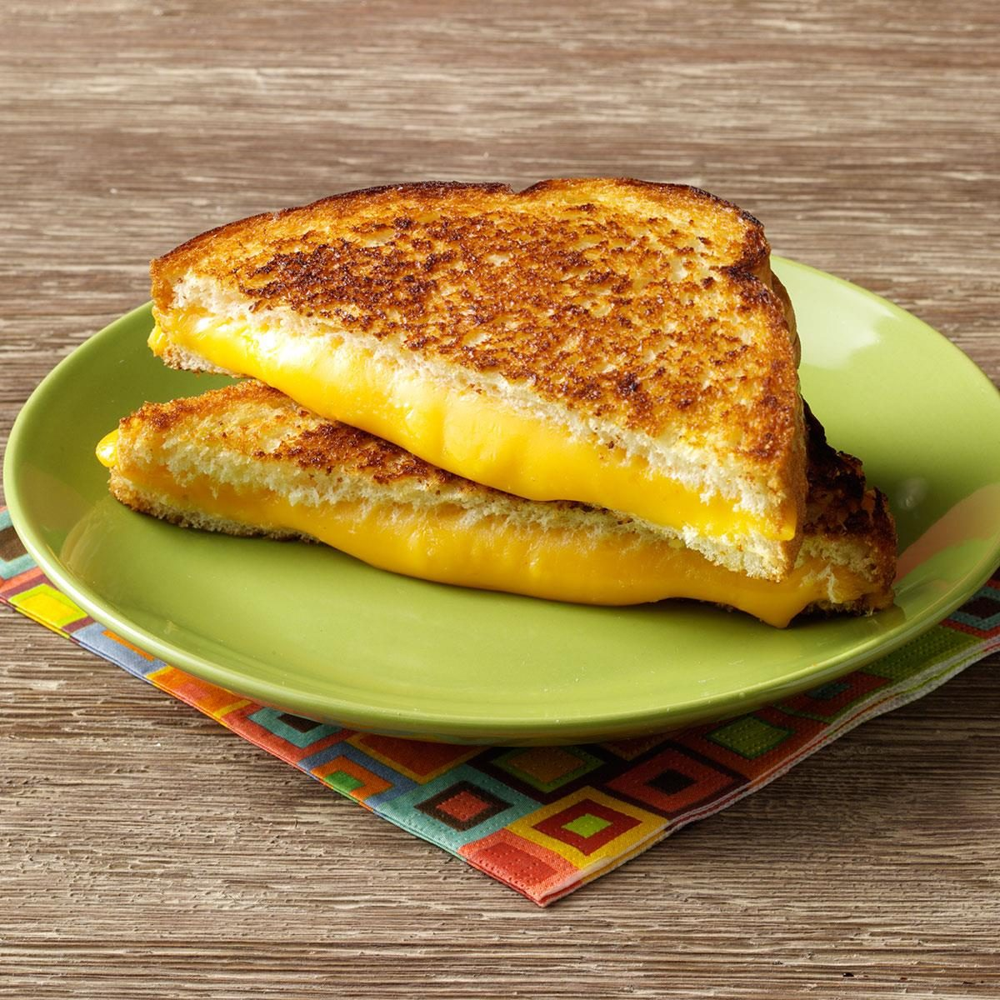

To make a grilled cheese sandwich, you will need 2 slices of bread, 2 slices of cheese, and 2 tablespoons of butter. Start by heating a pan over medium heat. Butter one side of each slice of bread. Place one slice of bread, butter-side-down, in the pan. Add the slices of cheese on top of the bread, then place the other slice of bread on top, butter-side-up. Cook the sandwich for 2-3 minutes on each side, or until the bread is golden brown and the cheese is melted. If the cheese is not melting as quickly as you would like, you can try placing a lid on the pan to help trap in the heat. Once the sandwich is cooked to your liking, remove it from the pan and slice it in half. Serve the grilled cheese sandwich hot and enjoy!
Ingredients
2 slices of bread
2 slices of cheese (such as cheddar, mozzarella, or American)
2 tablespoons of butter
Steps
Gather all the necessary ingredients: 2 slices of bread, 2 slices of cheese, and 2 tablespoons of butter.
Heat a pan over medium heat.
Butter one side of each slice of bread.
Place one slice of bread, butter-side-down, in the pan.
Add the slices of cheese on top of the bread.
Place the other slice of bread on top, butter-side-up.
Cook the sandwich for 2-3 minutes on each side, or until the bread is golden brown and the cheese is melted.
If the cheese is not melting as quickly as you would like, you can try placing a lid on the pan to help trap in the heat.
Once the sandwich is cooked to your liking, remove it from the pan and slice it in half.